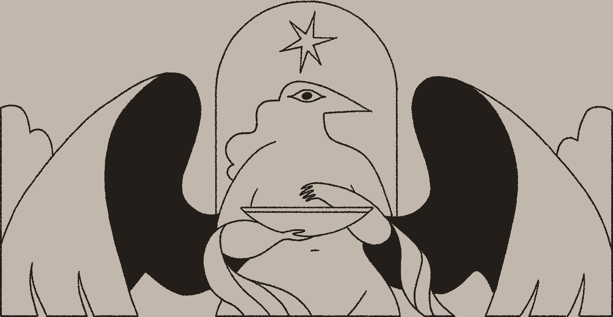

My work begins with techniques borrowed from mystics, magicians, occultists, and surreal artists. These include automatic drawing, asemic writing, scrying, sigils, and more. The process begins the same in both traditional and digital media, and I often wander between media as shapes and ideas bubble up from the subconscious.
These methods are guided by an ethos of sustainability and an embrace of the ephemeral and imperfect.
Together, they help me explore my own complex relationship to religion and spirituality, animist mysticism, devotion and purpose, and the connections between art and magick. All of this is combined and expressed through paintings, prints, oracle cards, zines, and mythopoeia filled with recurring symbolism.